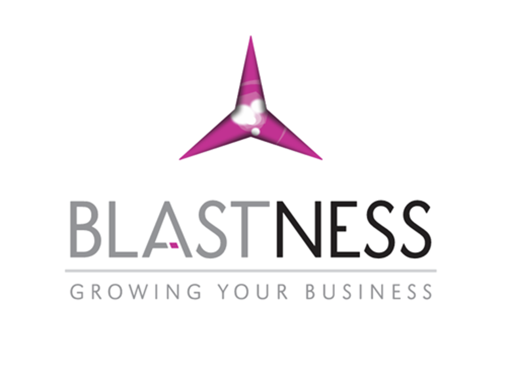
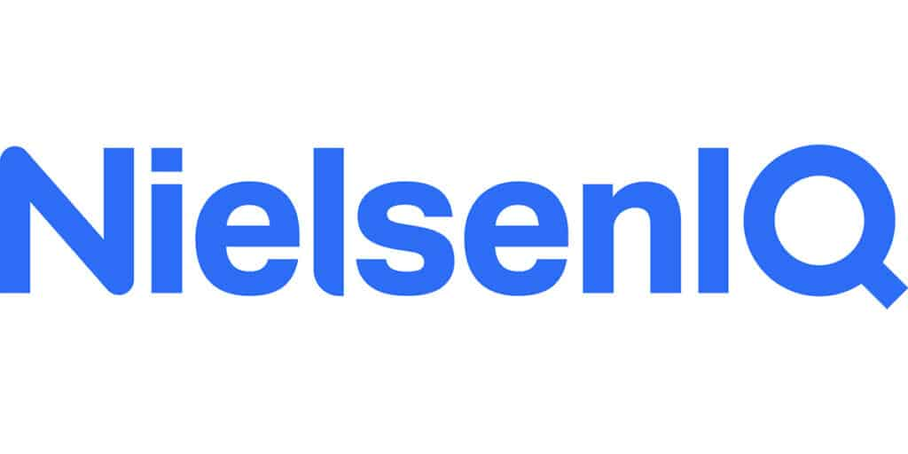
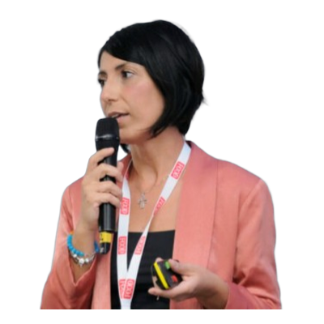

Purpose
Dove competere, chi servire, con quale messaggio.
Riorganizziamo le strutture commerciali delle aziende B2B. Individuiamo dove si perdono opportunità e interveniamo su processi, team, CRM e AI per rendere le vendite più efficaci e prevedibili.

Blastness
In ogni cliente la rottura è un punto diverso. C’è chi non genera contatti, chi non li converte, chi non chiude i preventivi, chi non vende.
Non parli con i potenziali clienti?
Non riesci a trasformare una conversazione in un’opportunità?
I preventivi li fai, ma troppo pochi convertono?
Sono meno di quello che ti aspetti?
In una sessione di 60 minuti analizziamo come vendete oggi, individuiamo i punti critici e definiamo le prime azioni da cui partire.
Servizio in arrivo
Se un commerciale se ne va, non sai come replicarlo.
I dati ci sono, ma non mostrano dove si perdono opportunità e cosa fare per recuperarle.
In parte è vero, ma se i numeri non tornano il problema è spesso all’inizio.
Sempre più costi per strumenti, stessi risultati.
Il problema non è per forza nelle persone. A volte è il sistema in cui le facciamo lavorare.
Sono situazioni diverse, ma hanno qualcosa in comune: manca un sistema commerciale capace di rendere il risultato replicabile.
Dove competere, chi servire, con quale messaggio.
Come si generano, si gestiscono e si convertono le opportunità.
Metodo, capacità e strumenti perché il team esegua in modo consistente.
AI: segmentazione.
AI: qualification, nurturing, pipeline.
AI: preparazione delle call.
Dove il sistema perde efficacia.
Cosa deve cambiare.
Processi, strumenti e materiali.
Finché diventa operativo.
Cosa funziona e cosa va corretto.
Dalla vendita individuale a un team strutturato, con un processo condiviso e decisioni guidate dai numeri.
Una crescita sostenuta da ruoli chiari, responsabilità definite e KPI condivisi.
Rendere scalabile il processo commerciale: costruire un funnel chiaro, condividere un metodo e misurare le performance per sostenere la crescita del team.
Un processo strutturato dalla generazione del lead alla firma, con maggiore controllo del funnel e un monitoraggio costante delle conversioni. Il lavoro su pricing, proposta di valore e ROI Calculator ha migliorato la qualità delle trattative e aumentato la conversione da progetto a contratto.
Inserimento di nuove figure BDR e Sales e passaggio da un ruolo operativo di vendita a quello di Sales Manager, con maggiore spazio a gestione, formazione e coaching.
Definizione delle fasi di Discovery, Demo e Progetto. Discovery call più solide, revisione del pricing e un ROI Calculator per rendere concreto e misurabile il valore della proposta.
KPI specifici per ogni ruolo, obiettivi misurabili e un sistema incentivante coerente con il percorso commerciale. Decisioni guidate dai dati e controllo continuo delle performance.
«Non si è limitato a dare consigli, ma ha lavorato con noi per costruire un processo commerciale realmente applicabile.»
Böhm Consulting nasce dall'esperienza operativa nel sales B2B. Quello che insegniamo è quello che costruiamo ogni giorno per le aziende: metodo, non slide.
Strategia commerciale, leadership, organizzazione e trasformazione.
15+anni nell’esperienza internazionale sales B2B
Processi, operations, analisi dati, execution.
10+anni in business digitali e startup
Generazione di pipeline, coaching commerciale.
13anni su trattative e team di vendita
«Value cases, HubSpot, account strategy: da pensiero strategico a sales operativo.»
«I perché dietro pipeline, planning e negoziazione. Ha cambiato come vende il team.»

Eleonora FormisanoNielsenIQ«Pratico e subito applicabile. Sblocca il valore reale del deal.»
«Poche slide, impatto reale sul modo di lavorare.»